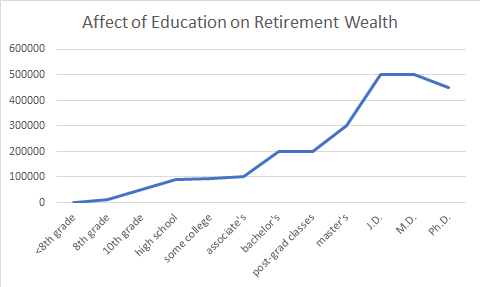

Education
More advanced schooling helps. If you can avoid the crushing debt of student loans, all the better. Try to find a major that you're good at and that is good to you.
Birthright
For accruing wealth, what's even better than education? Being born wealthy. In the graph below, note how the birthright high enders are able to become more wealthy than the education high enders. So before being born, shop around.